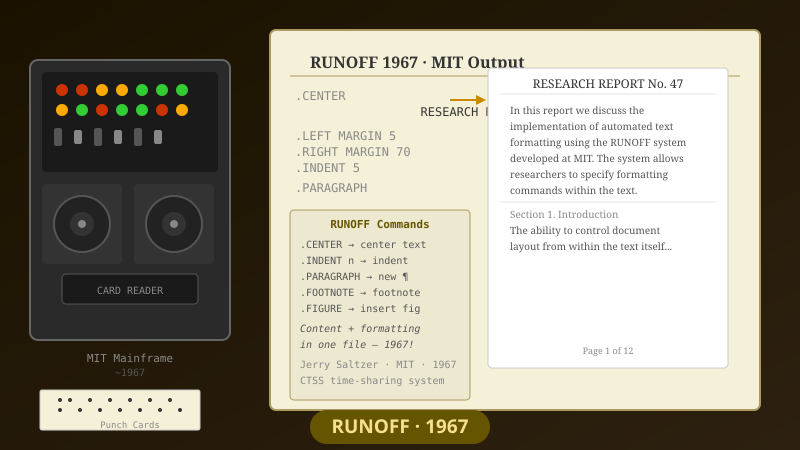

1967
RUNOFF, "공백을 자로 재지 맙시다"
"원고에 .CENTER라고 한 줄만 적어두면 컴퓨터가 알아서 가운데로 맞춰주잖아?" MIT 지하 연구실에서 대학원생이 밤새우던 논문 작업을 투덜대다 떠올린 이 생각이, 오늘날 모든 웹페이지가 따르는 "내용과 꾸밈은 따로"라는 원칙의 시작이었어요.

1960년대에 대학원생이 논문을 쓴다는 건 엄청난 고역이었습니다. 제목을 화면 가운데에 정렬하고 싶으면 앞에 공백을 몇 칸 넣어야 하는지 자로 재서 손으로 세야 했어요. 각주가 페이지 아래쪽에 잘 들어갔는지 한 줄씩 손가락으로 짚어가며 확인해야 했고, 한 문장만 고쳐도 뒷페이지 전체가 어긋나서 처음부터 다시 작업해야 했습니다. MIT 연구실에서는 "논문 한 편 쓰면 밤을 샌다"는 말이 공공연했습니다.
한 대학원생이 이 지겨운 반복을 없애보기로 했습니다. 그는 발상을 뒤집는 생각을 합니다.
"어차피 내가 원하는 건 '여기는 가운데로'잖아. 그럼 직접 공백을 세지 말고, 원고에 .CENTER라고 한 줄 적어두면 컴퓨터가 알아서 가운데로 맞춰주게 만들면 되잖아?"
그렇게 해서 글 사이사이에 .CENTER(가운데로), .PARAGRAPH(새 문단), .FOOTNOTE(각주) 같은 짧은 지시문을 섞어 두면, 컴퓨터가 그것들을 읽고 대신 종이를 예쁘게 뽑아주는 프로그램이 탄생했습니다. 이름은 RUNOFF. 옆자리 연구자는 첫 출력물을 들고 감탄했습니다. "명령 몇 줄 적었을 뿐인데 각주가 전부 제자리에 맞춰졌잖아!"
사소해 보이지만 이 순간은 IT 역사의 분기점이 됩니다. "내용(쓸 말)"과 "꾸미는 방법(어떻게 보일지)"을 분리하자 — 이 단순한 아이디어가 훗날 모든 웹페이지의 작동 원리가 되기 때문이에요. 여러분이 지금 읽고 있는 이 글의 제목이 화면 가운데에 딱 맞춰서 나오는 것도, 뉴스 사이트의 기사 본문이 단정한 모양으로 배치되는 것도, 전부 1967년 MIT 지하 연구실에서 시작된 이 생각 덕분입니다.
RUNOFF는 문장 사이에 지시문을 섞어 두면 컴퓨터가 줄바꿈과 각주를 대신 계산해 주는 초기 조판 도구였습니다. 사람 대신 기계가 문서 구조를 정리할 수 있다는 아이디어가 확인되면서, 이후 태그를 적어 놓는 마크업 언어의 씨앗이 되었습니다.